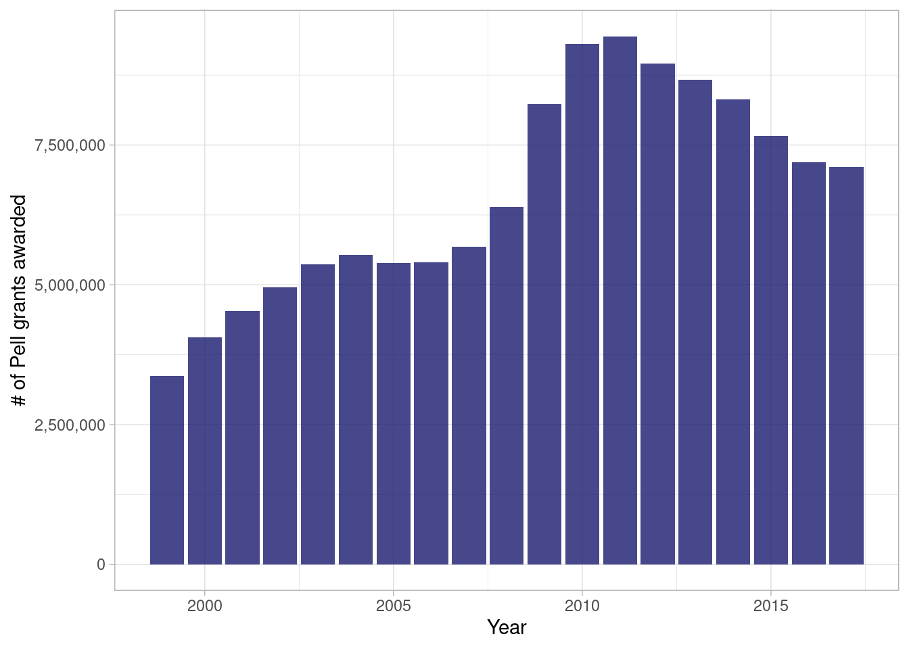
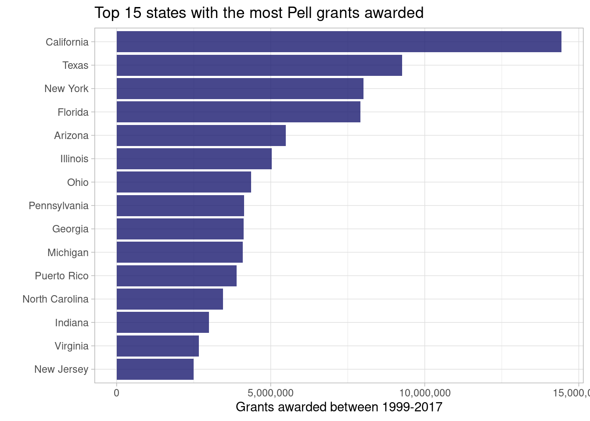
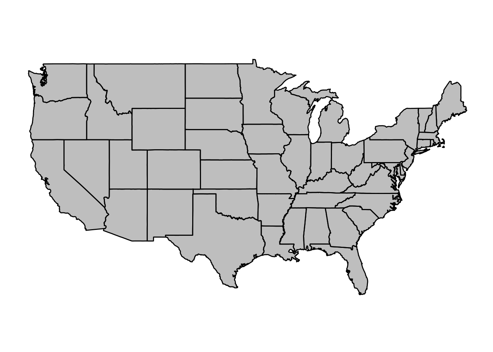
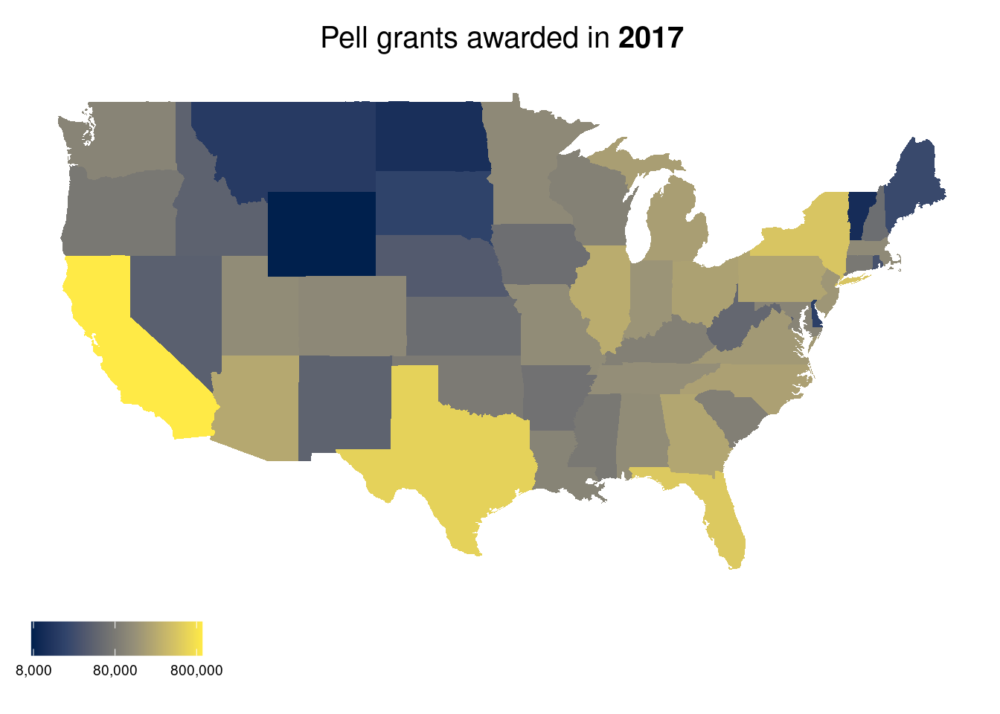
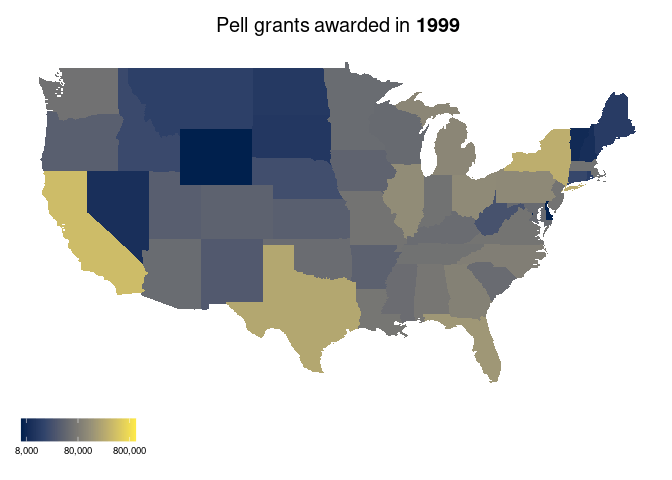

1. Program Description
Federal Pell Grants usually are awarded only to undergraduate students who display exceptional financial need and have not earned a bachelor’s, graduate, or professional degree. (In some cases, however, a student enrolled in a postbaccalaureate teacher certification program might receive a Federal Pell Grant.) You are not eligible to receive a Federal Pell Grant if you are incarcerated in a federal or state penal institution or are subject to an involuntary civil commitment upon completion of a period of incarceration for a forcible or nonforcible sexual offense.
A Federal Pell Grant, unlike a loan, does not have to be repaid, except under certain circumstances.
You can read more info about the Pell grant in the official site of the grant
2. Where do we get the data?
The data comes from the #TidyTuesday project, courtesy of the US Department of Education.
The data is already packaged in an R package called {Pell} hosted in CRAN.
This package vignette talks in more detail about the data and how it was sourced. To check out how the data was sourced and cleaned check download data directly page in the vignette.
Data dictionary
| Variable | Class | Description |
|---|---|---|
| STATE | integer | State short code |
| AWARD | double | Award amount in USD |
| RECIPIENT | double | Total number of recipients by year, name |
| NAME | integer | Name of college/university |
| SESSION | integer | Session group |
| YEAR | integer | Year |
Sample of the data
| state | award | recipient | name | session | year |
|---|---|---|---|---|---|
| GA | 5791500 | 2083 | Gordon College | 2008-09 | 2008 |
| TN | 16118052 | 4373 | Northeast State Community College | 2010-11 | 2010 |
| AR | 1234915 | 286 | Lyon College | 2010-11 | 2010 |
| NE | 1070906 | 438 | Nebraska Wesleyan University | 2002-03 | 2002 |
| FL | 422189 | 193 | Heritage Institute | 2004-05 | 2004 |
3. Exploratory Data Analysis
3.1 Grants awarded by year
grants_awarded_by_year <-
pell |>
count(year, wt = recipient)
grants_awarded_by_year |>
ggplot(aes(year, n)) +
geom_col() +
scale_y_continuous(labels = comma) +
labs(y = "# of Pell grants awarded",
x = "Year")
We can see a peak in the amount of grants awarded in 2011, with 9,444,368 total grants
3.2 Grants per state
The data come with the abbreviation of the state. To make a better plot, we will need the full name of the state. For this, I’m going to use the state.name and state.abb datasets that come in the {datasets} package. There are some missing states in this dataset, which we will fill manually. These are PR for Puerto Rico and and DC for District of Columbia. The rest of the missing states will be filtered out.
states <-
tibble(state = c(state.abb,"PR","DC"),
state_name = c(state.name,"Puerto Rico","District of Columbia"))
pell_states <-
pell |>
inner_join(states, by = "state")
glue("Dimensions of the pell dataset: [{ dim(pell)[1] }, { dim(pell)[2] }]")Dimensions of the pell dataset: [100474, 6]glue("Dimensions of the pell dataset with states names: [{ dim(pell_states)[1] }, { dim(pell_states)[2] }]")Dimensions of the pell dataset with states names: [100295, 7]pell_states |>
count(state_name, wt = recipient, sort = TRUE) |>
head(15) |>
mutate(state_name = fct_reorder(state_name, n)) |>
ggplot(aes(n, state_name)) +
geom_col() +
scale_x_continuous(labels = comma) +
labs(y = "",
x = "Grants awarded between 1999-2017",
title = "Top 15 states with the most Pell grants awarded")
Since we have state data and a period of time, probably makes sense to make a choropleth map animated by year. For this, I will use the {ggplot2} package, which have a function to plot maps and it’s easy to use.
map_data("state") |>
slice_sample(n = 5) |>
knitr::kable()| long | lat | group | order | region | subregion |
|---|---|---|---|---|---|
| -76.67321 | 38.22202 | 19 | 5842 | maryland | NA |
| -81.34855 | 37.31674 | 55 | 14097 | virginia | main |
| -114.08163 | 36.13645 | 30 | 8571 | nevada | NA |
| -76.24923 | 44.04900 | 35 | 9176 | new york | main |
| -91.23779 | 33.57533 | 26 | 7695 | mississippi | NA |
For using it, you just have to assign the long column to the x value, the lat column to the y value, and the group column to the group value in ggplot2, as shown below.
map_data("state") |>
ggplot(aes(long, lat, group = group)) +
geom_polygon(fill = "gray50", alpha = 0.5, color = "black") +
coord_map() +
ggthemes::theme_map()
Now we need to fill the states with the values we want to show. In the map_data dataframe, the names of the states are all lowercase, whereas in our data the names are title case, that’s something to consider when joining both dataframes.
First, I will make a map for only one year, to be sure everything works fine.
by_state_count <-
pell_states |>
count(state_name, year, wt = recipient)
by_state_count |>
filter(year == 2017) |>
mutate(region = str_to_lower(state_name)) |>
right_join(map_data("state"), by = "region") |>
ggplot(aes(long, lat, group = group, fill = n)) +
geom_polygon() +
scale_fill_viridis_c(option = "E",
trans = "log10",
breaks = 8*10^seq(3,5),
labels = comma(8*10^seq(3,5)))+
coord_map() +
ggthemes::theme_map()+
labs(fill = "",
title = "Pell grants awarded in **2017**") +
theme(legend.position = "bottom",
plot.title = element_markdown(size = 15, hjust = 0.5))
Now that we know this works, we can make and animation with {gganimate}
library(gganimate)
p <- by_state_count |>
mutate(region = str_to_lower(state_name)) |>
right_join(map_data("state"), by = "region") |>
ggplot(aes(long, lat, group = group, fill = n)) +
geom_polygon() +
scale_fill_viridis_c(option = "E",
trans = "log10",
breaks = 8*10^seq(3,5),
labels = comma(8*10^seq(3,5)))+
coord_map() +
ggthemes::theme_map()+
transition_manual(year) +
labs(fill = "",
title = "Pell grants awarded in **{current_frame}**") +
theme(legend.position = "bottom",
plot.title = element_markdown(size = 15, hjust = 0.5))
animate(p, duration = 12)